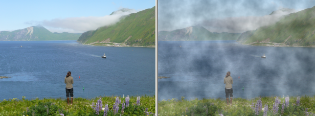

Artistic Effect: Clouds
Previous
Top
Next
The Clouds effect makes a photo appear like it was taken in clouds or mist. You can specify the cloud color, density, frequency, and opacity. The frequency is the number of the clouds, and the density is the density of each cloud.
